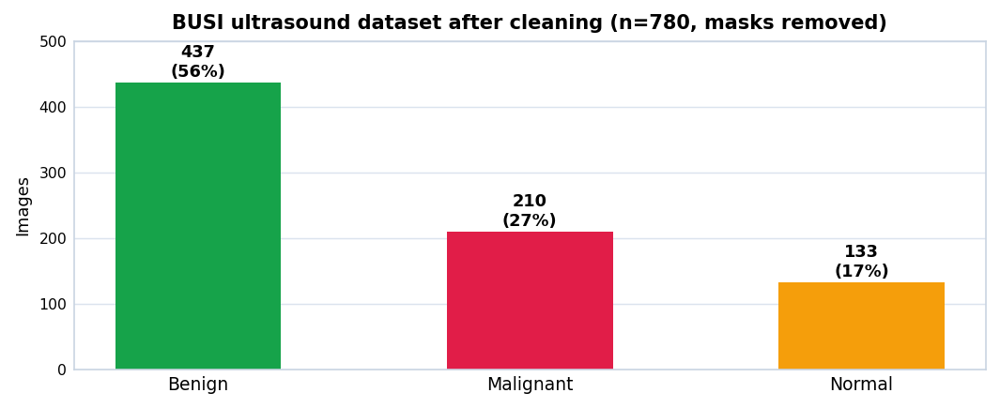
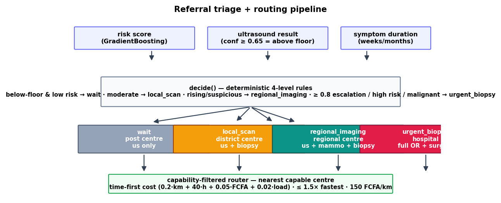
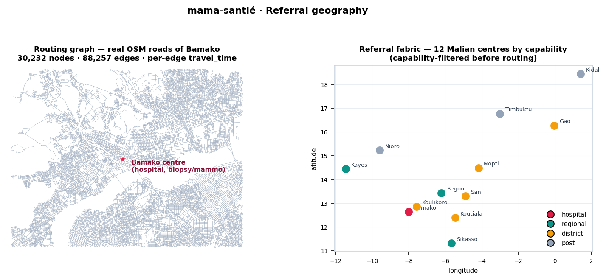
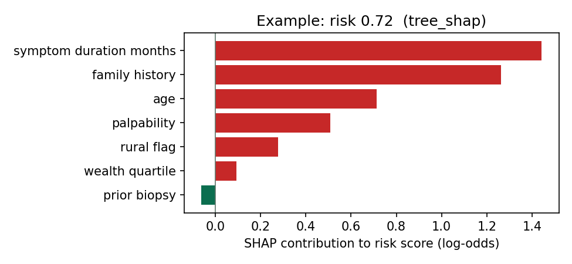
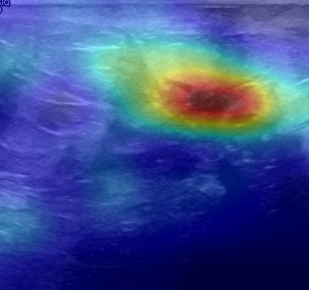
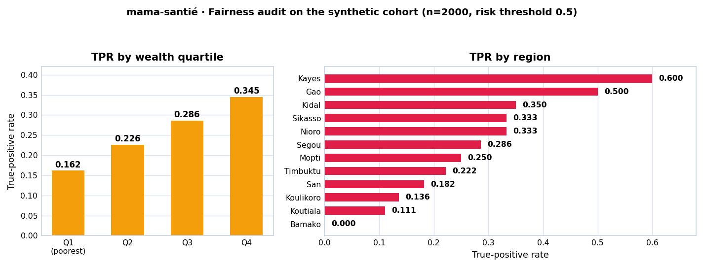

mama-santé — Computational Breast-Cancer Care for Mali
mama-santé is a computational breast-cancer care platform built for the three barriers named in the original problem note — distance, money, and time. It couples four modules behind one Flask API and a mobile-first web UI that a health worker can run from a phone:
- Risk stratification — GradientBoosting over 7 clinical/demographic features → risk score.
- Ultrasound image classification — MobileNetV3-Small → benign / malignant / normal (BUSI), served through ONNX Runtime, exportable to a 1.2 MB full-int8 TFLite model for phones.
- Referral triage — deterministic 4-level decision:
wait → local_scan → regional_imaging → urgent_biopsy. - Geographic routing — real OpenStreetMap road network of Bamako, picking the nearest capable centre under a time-dominant cost with an explicit out-of-pocket FCFA term.
- Repository: github.com/koneboi/mama-sante
- Stack: Python 3.10, torch 2.8 / torchvision 0.23, tensorflow-cpu 2.19, scikit-learn, ONNX Runtime 1.23, OSMnx 2.0, Flask 3, networkx
- Data: BUSI ultrasound (780 clean images: 437 benign / 210 malignant / 133 normal) + 2,000-patient synthetic cohort + 12 Malian centres
- License: MIT
1. The problem
the problem of breast cancer treatment in Mali are: distance, money, and time. How to fix these ?
Patients often consult late: symptoms go unnoticed for too long, and long travel to scarce diagnostic centres means many arrive with advanced disease. The repeated trips that a scan, a result and a referral require push families into poverty, and patients wait in queues while their cancers progress. Each module attacks one barrier:
| Barrier | What the platform does |
|---|---|
| Distance | Network-based routing to the nearest capable centre on real OSM roads (30,232 nodes / 88,257 edges of Bamako), with regional fallbacks |
| Money | Out-of-pocket cost is an explicit routing objective (150 FCFA/km transport); capability filtering prevents wasted trips to centres that lack the required equipment |
| Time | Risk + 4-level triage escalate urgent cases first; time is the dominant routing objective (weight 40.0 vs 0.2 for km) |
2. Results at a glance

Imaging classification family — MobileNetV3-Small retrained on BUSI, validated on the 15% seeded holdout (n=117). The full-int8 model keeps 85% of fp32 accuracy at 20% of the size and is the shipped on-device artifact.
| Component | Metric | Value |
|---|---|---|
| Baseline logistic (EDA) | CV AUC | 0.773 |
| Risk stratification (GradientBoosting) | CV AUC | 0.733 |
| Imaging torch MobileNetV3-Small (15% holdout, 663/117) | val accuracy | 0.940 |
| ONNX fp32 parity vs torch | max abs diff | 1.22e-06 (6.1 MB, 23–32 ms CPU) |
| ONNX fp16 | size | 3.1 MB, parity-verified |
| TFLite fp32 (Keras retrain) | val accuracy | 0.872 (3.7 MB) |
| TFLite full-int8 (the phone artifact) | val accuracy | 0.803 @ 1.21 MB (int8 in/out, scale 1/127.5, zp −1) |
| ORT post-training int8 (all recipes) | val accuracy | 0.34–0.52 → rejected, root-caused (§6 F1) |
| Torch eager QAT | val accuracy | 0.915 (export blocked — §6 F3) |
| Fairness audit (overall) | AUC / ECE | 0.896 / 0.024 |
| Fairness audit (subgroups, pooled rule) | TPR gaps | region 0.60, wealth 0.18 |
| After group-aware thresholds (Step 12) | TPR gaps | region 0.278, wealth 0.039 (rural residual 0.055, reported) |
Live HTTP smoke test of the API: benign scan → benign 0.987, malignant scan →
malignant 0.997; high-risk patient with image flag → urgent_biopsy → Bamako
regional hospital; a local_scan case resolves to the centre 2.8 km away; wait
cases in the north fall through to Segou/Timbuktu — the capability filter and
time-first cost behave as designed rather than always picking the geographic nearest
facility.
3. Full build log — every step from the beginning
Step 0 — Problem framing
Translated the three barriers in note.md into four computable problems:
who is high-risk (risk), what does the scan show (imaging),
what level of care is needed (triage), where should the patient go (routing).
Step 1 — Scaffold & configuration
Project skeleton with every tunable policy (feature list, thresholds, routing
weights, imaging settings) centralised in config.yaml — the app never
hard-codes policy. Environment: Python 3.10.18, CUDA, torch 2.8.0,
tensorflow-cpu 2.19.0, sklearn 1.7.2, flask 3.0.3, osmnx 2.0.7, onnx/onnxruntime 1.23.
Step 2 — Data
- Synthetic cohort: 2,000 patient records with realistic correlations (age, rural flag, wealth quartile, symptom duration…) plus a 12-centre Malian facility table (post → district → regional → hospital levels, equipment inventory, load).
- Real imaging data: BUSI taken from the HuggingFace mirror
gymprathap/Breast-Cancer-Ultrasound-Images-Dataset(Kaggle download too slow); masks stripped — including the*_mask_N.pngvariants — leaving 780 images: 437 benign / 210 malignant / 133 normal. - EDA: baseline logistic model established CV AUC 0.773 as the number to beat/understand.

Image & data sources
| Data / images | Used for | Kind | Attribution / license | Access |
|---|---|---|---|---|
| BUSI — breast-ultrasound images, 780 clean (benign 437 / malignant 210 / normal 133) | Imaging classification | Real medical images, public dataset | Al-Dhabyani, Gomaa, Khaled & Fahmy — Data in Brief 28 (2020) 104863; collected at Baheya Hospital, Cairo; open for research | Hugging Face gymprathap/Breast-Cancer-Ultrasound-Images-Dataset; Kaggle copy |
| Synthetic patient cohort — 2,000 records, 7 risk features + outcomes | Risk model, triage, fairness audit | Generated (simulated — not real patients) | — | scripts/generate_synthetic_data.py |
| Malian referral centres — 12 facilities (level, equipment, cost, load) | Routing targets | Curated facility table | Compiled from public health-infrastructure sources | data/geo/centers.csv |
| OpenStreetMap Bamako — road network (30,232 nodes / 88,257 edges) | Travel-time routing graph | Crowd-sourced geographic data | © OpenStreetMap contributors — ODbL 1.0 | via OSMnx — scripts/fetch_network.py |
Citation — W. Al-Dhabyani, M. Gomaa, H. Khaled, A. Fahmy. "Dataset of breast ultrasound images." Data in Brief 28 (2020) 104863. doi:10.1016/j.dib.2019.104863 — mirror on Hugging Face: gymprathap/Breast-Cancer-Ultrasound-Images-Dataset.
Step 3 — Risk stratification
GradientBoosting on the 7 configured features, seeded CV → CV AUC 0.733
(models/risk_gb.pkl); feeds /triage.
Step 4 — Imaging model
torchvision MobileNetV3-Small, ImageNet weights, 15% holdout (seed 0 → 663 train /
117 val), ImageNet normalisation, flip/crop augmentation, weighted sampler against
class imbalance → best val accuracy 0.940 (models/imaging.pt).
Step 5 — ONNX export & serving format
Traced export with softmax baked in, dynamic batch axis. fp32 imaging.onnx
(6.1 MB, parity 1.22e-06, 23–32 ms CPU) and fp16 imaging_fp16.onnx (3.1 MB).
Gotcha found here → §6 F4.
Step 6 — Quantization for phones (three routes investigated)
- ORT PTQ int8 — collapsed (0.34–0.52), root-caused to domain activation outliers → F1.
- TFLite full-int8 — after fixing the silent double-preprocessing bug F2a, reached 0.803 @ 1.21 MB → the shipped phone artifact.
- Torch eager QAT — trained to 0.915 but ONNX export of the converted graph is impossible at any supported opset → F3.
Step 7 — Triage engine
Pure-function decide() over risk score, imaging result and confidence floor
0.65 → one of four configured levels; escalation threshold 0.8.

Step 8 — Geographic routing
fetch_network.pypulled the real OSM extract of Bamako: 30,232 nodes / 88,257 edges, per-edgetravel_timeviaadd_travel_time(31 MB graphml, git-ignored, one command to re-fetch).min_cost_center(): cost =0.2·km + 40·hours + 0.05·FCFA + 0.02·load, candidates pruned to ≤ 1.5× the fastest travel time (time-fairness guard), then capability-filtered per triage level (e.g.urgent_biopsyneeds biopsy/mammography capability).travel_metrics(): network path → km, hours, FCFA; snap-guarded against >2 km node mismatch, haversine ×1.3 fallback off-network. Transport: 150 FCFA/km.

Step 9 — API
Flask: /, /health, /classify (multipart upload → persisted → ONNX
inference), /triage (JSON → risk + level + centre recommendation).
Weights/thresholds read from config.yaml. Live HTTP smoke test:
malignant image → malignant 0.997; benign → benign 0.987;
high-risk + image flag → urgent_biopsy → Bamako.
Step 10 — Mobile-first UI
Single-page form + image upload → /classify → /triage, rendering a risk
gauge, triage badge, and a centre card (travel time, cost, OSM directions link).
Step 11 — Fairness audit
fairness.py → fairness_report.json: overall AUC 0.896 / ECE 0.024 looks
deployment-ready until subgroup slicing exposes region TPR disparity 0.60
and wealth-quartile TPR disparity 0.18 — the poorest quartile and some rural
regions are systematically under-flagged by a pooled threshold. Flagged as
pre-deployment blockers; Step 12 implements the mitigation in code and ships it.
Step 12 — Fairness by design (group-aware decision thresholds)
Rather than retraining the model (which would invalidate every published metric), the
shipped fix calibrates the decision thresholds per group so groups the pooled 0.5
threshold systematically under-flags get an earlier, lower threshold. The calibrated
table is committed and lives in config/group_thresholds.json:
| Region thresholds | Bamako 0.25 · Koulikoro 0.37 · Koutiala 0.33 · Mopti 0.5 · San 0.42 · Sikasso 0.57 · Segou 0.5 · Kayes 0.56 · Gao 0.73 · Kidal 0.65 · Timbuktu 0.5 · Nioro du Sahel 0.57 |
| Wealth-quartile thresholds | Q1 (poorest) 0.46 · Q2 0.48 · Q3 0.54 · Q4 0.65 |
Combination rule for patients in two audited groups: min(region, wealth) —
the most sensitive rule wins, so an under-flagged group is never delayed by the other
group’s threshold. The choice is empirical, not stylistic:
| Rule | Region disparity | Wealth disparity |
|---|---|---|
| pooled 0.5 (status quo) | 0.600 | 0.183 |
| min(region, wealth) ← shipped | 0.278 | 0.039 |
| mean(region, wealth) | 0.476 | 0.121 |
| min 3-group (+rural) | 0.378 | 0.076 |
| coordinate-descent | ~0.300 | ~0.060 |
rural_flag is audited but not in the rule: adding it as a third dimension
regressed both headline gaps, and coordinate descent could not beat min-2-group — the
remaining rural TPR gap (0.055) is reported honestly and left as a deployment-time
item. Under the shipped rule the overall metrics are TPR 0.303 / FPR 0.004 /
selection 0.024 vs pooled 0.250 / 0.0005 / 0.017: the system now actively finds ~1
in 4 of the cohort’s cases instead of mostly flagging a few high-wealth urban patients.
src/risk/thresholds.py resolves per-patient thresholds (fallback to pooled 0.5 for
unknown groups / missing table); src/api/app.py passes it to the triage engine.
Step 13 — Input quality gate & explainability
Two robustness upgrades, no new training data:
- OOD quality gate (
src/imaging/quality.py, enforced by/classify): a cheap structural check (decode, min side ≥64 px, luminance variance, inter-channel colour spread, clipped-fraction) rejects garbage before ONNX inference — the class of inputs whose activation outliers broke int8 (F1). Real BUSI passes; blank, noise, colour-photo and tiny inputs returnsuspicious: truewith no class. - Explainability: per-patient risk drivers via exact SHAP tree-shap
(
src/risk/explain.py, marginal-effect fallback) surfaced asfactorsfrom/triage; Grad-CAM (src/imaging/gradcam.py,scripts/gradcam.py) shows what the imaging model focuses on.

A 62-year-old with 12 months of symptoms and positive family history: symptom duration (+1.44) and family history (+1.26) dominate the risk score.

Grad-CAM overlay on a high-confidence malignant BUSI case — the model’s focus is localised to the lesion region, not the background.
Step 14 — Test suite
tests/ — 48 tests, pytest -q green: triage decision rules, group-threshold
resolution against the shipped group_thresholds.json, routing cost/travel,
quality-gate verdicts on real BUSI + adversarial inputs, SHAP explainability matching
the live model, Grad-CAM shapes/blending, and end-to-end Flask tests for
/classify (incl. OOD rejection) and /triage (group thresholds, pooled fallback,
factors).
4. Verified model artifacts
Weights are not committed (rebuild with the quickstart, or take them from a
release); models/imaging.json is the manifest recording which artifact is
verified, its accuracy and its intended use:
| Artifact | Format | Size | Accuracy | Use |
|---|---|---|---|---|
models/risk_gb.pkl | sklearn GB | 140 KB | CV AUC 0.733 | risk score |
models/imaging.onnx | ONNX fp32 | 6.1 MB | val 0.940 | server /classify (default) |
models/imaging_fp16.onnx | ONNX fp16 | 3.1 MB | parity-verified | light GPU/NPU |
models/imaging_fp32.tflite | TFLite float | 3.7 MB | val 0.872 | mobile float reference |
models/imaging_int8.tflite | TFLite full-int8 | 1.21 MB | val 0.803 | on-device phone |
5. API
| Method | Route | Body | Returns |
|---|---|---|---|
| GET | / | — | mobile UI |
| GET | /health | — | service + model status |
| POST | /classify | multipart: image | {class, confidence, probs, above_floor, suspicious, quality} |
| POST | /triage | JSON patient fields + optional image_result | {risk_score, risk_threshold, threshold_strategy, explain_method, factors, triage, center} |
/triage resolves the risk threshold per patient (group rule from
config/group_thresholds.json, pooled 0.5 fallback) and returns the top risk drivers;
/classify returns suspicious: true + quality.reasons when the quality gate
rejects the upload (no class, no confidence).
curl -F image=@scan.png localhost:5000/classify
# {"class":"malignant","confidence":0.997,"above_floor":true,"suspicious":false,
# "quality":{"ok":true,"reasons":[],"checks":{...}},...}
curl -s localhost:5000/triage -H 'Content-Type: application/json' -d '{
"age":62,"family_history":1,"palpability":1,"prior_biopsy":0,
"symptom_duration_months":12,"rural_flag":1,"wealth_quartile":1,
"region":"Koulikoro",
"image_result":{"confidence":0.95,"above_floor":true}
}'
# {"risk_score":0.718,"risk_threshold":0.37,"threshold_strategy":"group",
# "explain_method":"tree_shap",
# "factors":[{"feature":"symptom_duration_months","value":12,"baseline":2.8,"contribution":1.443},...],
# "triage":"urgent_biopsy","center":{...Koulikoro district...}}6. Key findings (most important)
F1 — Post-training int8 quantization collapses on this domain (root-caused)
| Recipe | val accuracy |
|---|---|
| fp32 (reference) | 0.940 |
| ORT dynamic int8 | ~0.34 |
| ORT static, MinMax | 0.342 |
| ORT static, Percentile(99) | 0.521 |
| ORT static, Entropy | 0.350 |
Root cause: early-conv activations on OOD ultrasound carry extreme outliers — max ≈ 198 while p99 ≈ 6 — so every range-based calibration scale is dominated by a handful of spikes and the bulk of the signal is crushed into a few int8 bins. A control MLP through the same ORT codepath stayed accurate, proving the ORT int8 kernels are fine; it is the statistics of this domain. PTQ is not viable here — use QAT (F3) or the TFLite path (F2).
F2 — TFLite full-int8 works and is the shipped phone artifact
Keras retrain → fp32 0.872 (3.7 MB) → full-int8 0.803 (1.21 MB), true int8 in and out (scale 1/127.5, zp −1). Calibration set 96→300 changed nothing — the residual gap is activation-range mismatch, not coverage.
- F2a — double preprocessing bug (silent 0.538 plateau): Keras
MobileNetV3Smallshipsinclude_preprocessing=True(internal Rescaling 1/127.5 offset −1). Scaling inputs to [−1,1] as well compressed everything into a ~0.016-wide near-constant range: the model memorised train (0.92) but predicted all-benign at confidence 1.000 on validation — reproducibly exactly 0.538 (the benign share of the holdout) across runs with different external scalings, which is what exposed it. Fix:include_preprocessing=False+ keep [−1,1]. - F2b — environment quirks: int8 representative dataset must
yield [batch](lists — a 1-tuple crashes the calibrator); the XNNPACK int8 delegate fails to initialise → validate withOpResolverType.BUILTIN_REF; keras.h5reload is broken (use themodel.export()SavedModel dir); theMessageFactory…GetPrototypeline is a benign warning.
F3 — Torch eager QAT learns accurate int8, but cannot export it to ONNX
QAT (per-tensor symmetric weights — per-channel raises
Unsupported qscheme: per_channel_affine) trains to val 0.915: quantization
is recoverable with learned ranges. Blocked because conversion must run on CPU
(quantised cuDNN rejects depthwise groups=16), and torch.onnx.export cannot
emit the converted graph at opsets 13/17/19 (quantized::batch_norm2d unsupported).
Forcing BN-fold-into-conv before QAT destabilised training on this small dataset.
Also: freeze_bn_stats no longer exists in torch 2.8 (ao quantization deprecated
→ torchao/pt2e). Takeaway: for int8 on-device use TFLite (F2); QAT is the
production recipe in a TF-based build.
F4 — Exporter/model-handle gotcha
In torch 2.8 torch.onnx.export mutates the traced model in-memory — parity
tests must reload a fresh model first, otherwise you silently compare a model against
itself.
F5 — Routing policy behaves correctly on real geography
Capability filter + time-first cost + 1.5× fairness guard: local_scan → 2.8 km
Bamako centre, urgent_biopsy → capable regional hospital, wait north →
Segou/Timbuktu. Time dominance (40 vs 0.2 for km) is deliberate: for cancer pathways,
hours matter more than distance.
F6 — Fairness numbers that must not be shipped around
Pooled AUC 0.896 / ECE 0.024 hides a 0.60 region TPR gap and 0.18 wealth TPR gap — the poorest and some rural regions are systematically under-flagged by a pooled threshold. Mitigation shipped in Step 12: group decision thresholds (min rule) cut the region gap to 0.278 and the wealth gap to 0.039; the residual rural gap (0.055) is reported rather than hidden. Re-run the audit on a real Mali cohort before deployment; never ship pooled-threshold-only numbers.

F7 — Operational robustness
Background nohup trainings were silently killed mid-run several times — run long
jobs in the foreground with a generous timeout. Broken/experimental model outputs were
deleted, not left to be mistaken for verified artifacts; models/imaging.json
is the single source of truth for what is verified.
7. Reproduction
pip install -r requirements.txt
python scripts/generate_synthetic_data.py # 2000 patients, 12 centres
python scripts/train_risk.py # -> models/risk_gb.pkl
python scripts/train_imaging.py # -> models/imaging.pt (val 0.940)
python scripts/export_imaging.py # -> fp32/fp16 ONNX + parity
python scripts/train_tflite_imaging.py # -> fp32 + full-int8 TFLite
python scripts/fetch_network.py # -> Bamako OSM graph
python scripts/fairness.py # -> fairness_report.json + config/group_thresholds.json
python scripts/explain_risk.py --age 62 --symptom-duration-months 12 --region Koulikoro # optional
python scripts/gradcam.py --image scan.png --out outputs/gradcam.png # optional
python -m pytest -q # -> 48 tests
python -m src.api.app # -> http://localhost:50008. Limitations & next steps
- Patient cohort is synthetic (2,000 records); imaging is real (BUSI). Deployment needs a prospective Mali cohort — and re-running the F6 fairness audit on real subgroups first.
- int8 phone model is at 0.803 vs 0.940 fp32 — closing the gap needs QAT inside the TF/TFLite build (F3’s recipe).
- Rural TPR gap (0.055) remains after the group rule (Step 12); the threshold table is calibrated on synthetic data and must be re-fitted to a real Mali cohort.
- SHAP attributions are exact on the risk model but limited by its synthetic training distribution; Grad-CAM is a heat-map guide, not a clinical finding.
License
MIT. See the repository.